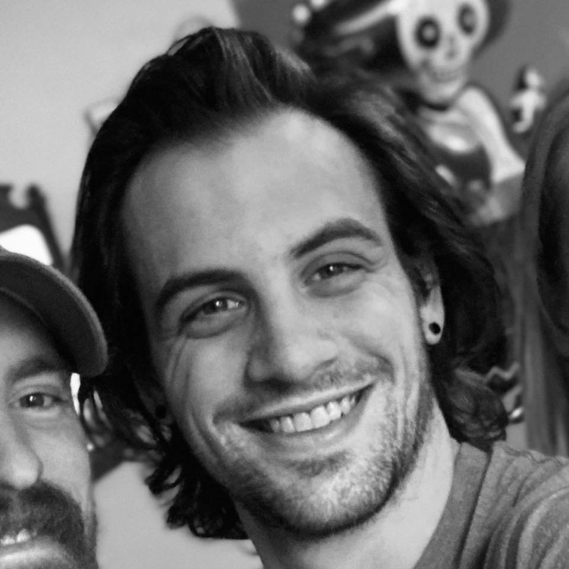

My name is Jack Neuner and I'm currently a student with experience in graphic design. I have a background focused in retail and sales enviroments, training, and product design. I'm fueled by my passion for understanding the nuances of design. I consider myself an artist, eager to both build on my academic foundations in web development and take my outside experiences and apply them to this new field that is rapidly expanding. Unfortunaly, like many others I was furloughed because of the Covid-19 pandemic in early 2020. I was given time to really think about what kind of future I wanted for myself. fortunatly,my interest in coding was solidified as an actual career option. Moving forward I want to take what I have learned and applied in graphic design to this new field exploring front end web development.
